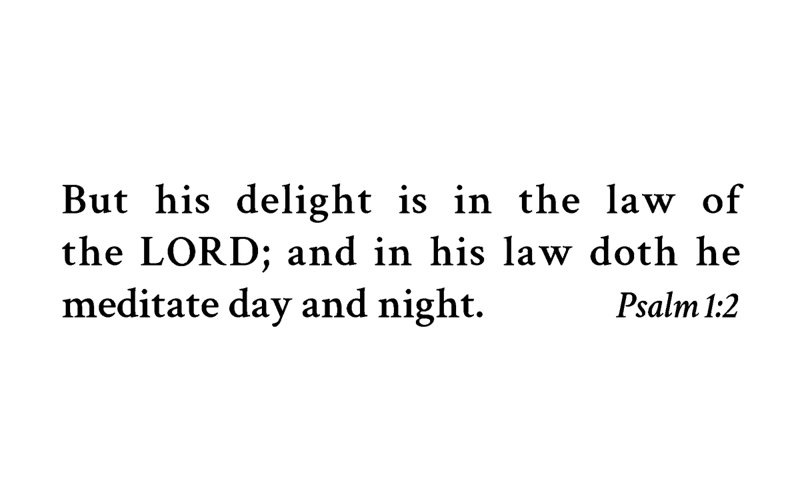

Card 1


Front
Blessed is the man that walketh not in the counsel of the ungodly, nor standeth in the way of sinners, nor sitteth in the seat of the scornful.
Psalm 1:1Back
But his delight is in the law of the LORD; and in his law doth he meditate day and night.
Psalm 1:2